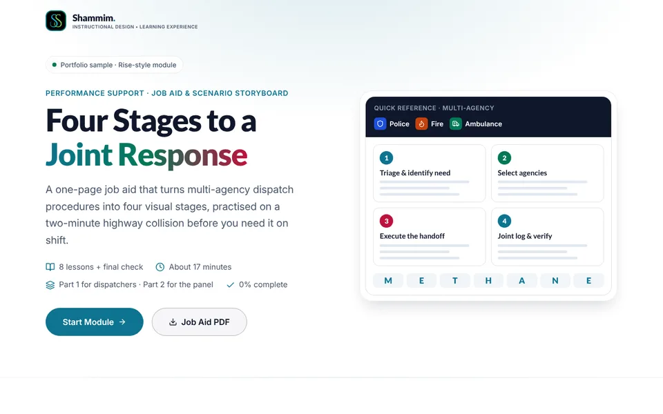
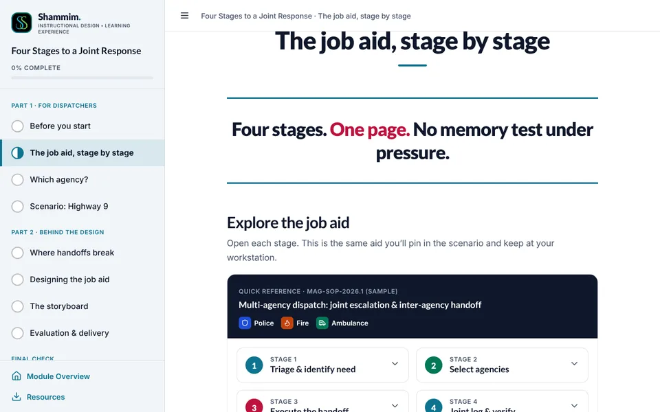
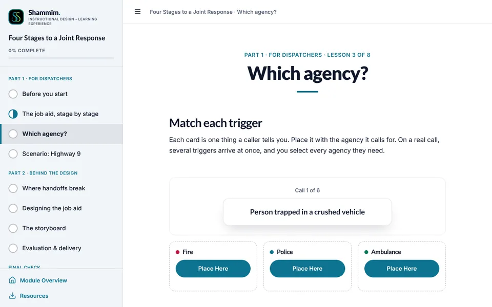
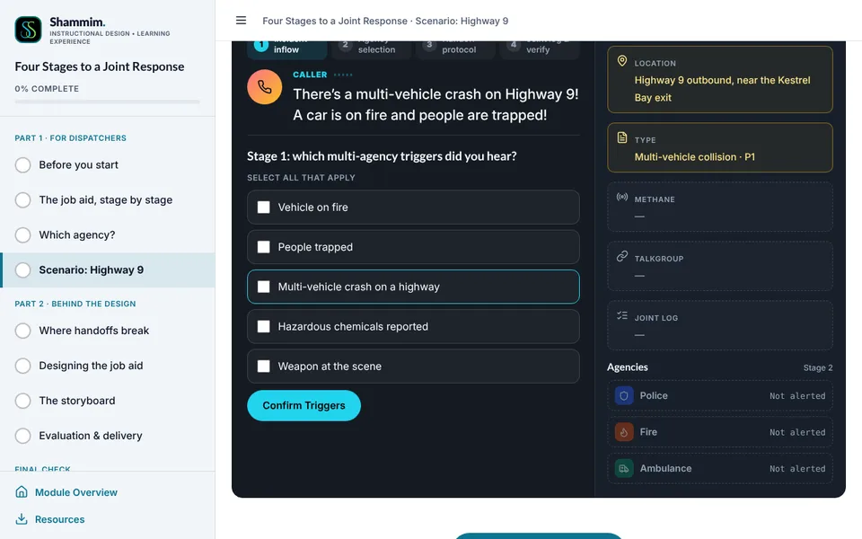
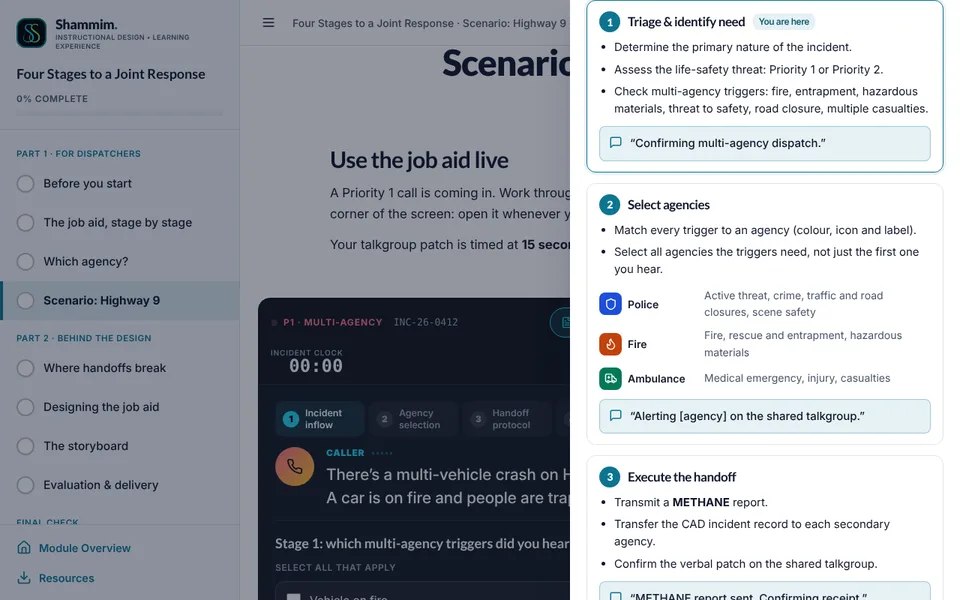
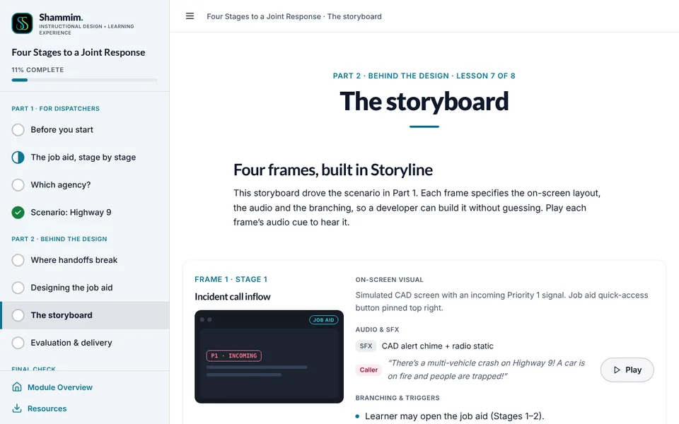
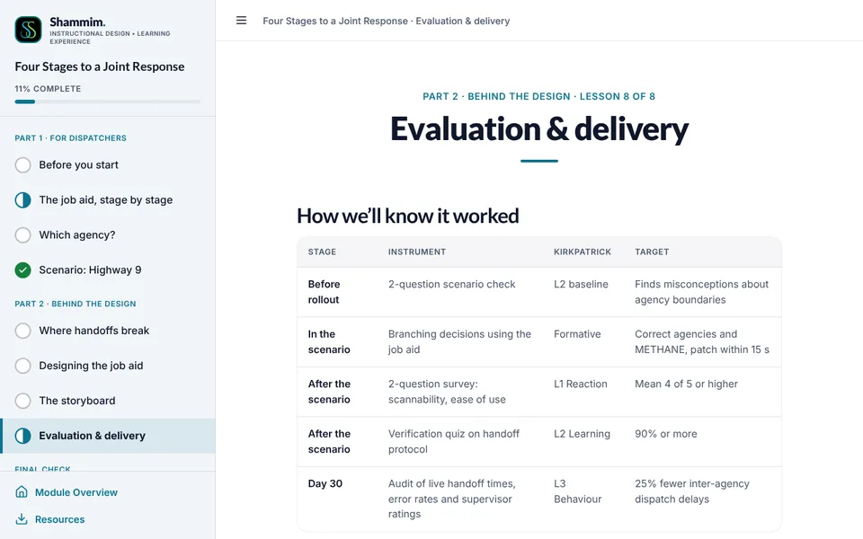

FS-00Module home

Four Stages to a Joint Response
- On screen
- A preview of the job aid: agency legend and the four stages, with the METHANE strip.
- Interaction
- Start Module, or download the one-page job aid PDF.
- Audio
- None.
Multi-agency dispatch · performance support Workplace project
A one-page job aid that turns multi-agency dispatch procedures into four visual stages, practised on a two-minute highway collision before dispatchers need it on shift.

My role
Workplace project for a multi-agency dispatch context. Names, addresses, incident numbers and talkgroups are fictional, and the protocols are simplified for learning. They are not the operational procedures of any emergency service.
Multi-agency incidents broke at the handoffs: second and third agencies alerted late, triggers such as entrapment not escalated, and the same details re-keyed for each agency.
Performance support for the moment of apply: a one-page job aid in four stages, explored stage by stage, practised with trigger sorting, then used live on a highway collision with the aid one click away.
Built from incident logs, friction reports and supervisor debriefs across police, fire and ambulance dispatch. Evaluated with a baseline check, a reaction survey, a 90% verification check and a 30-day handoff audit.
An interactive job aid, METHANE step-through, trigger sorting, a CAD scenario with trigger selection, agency toggles, a METHANE form and a timed talkgroup patch, and a colour-blindness preview of the agency marks.
| Unit | Title | Objective (the learner can…) | Evidence |
|---|---|---|---|
| Lesson 1 | Before you start | Show what you already know about agency boundaries. | Two baseline questions, not scored |
| Lesson 2 | The job aid, stage by stage | Use the four stages and METHANE, letter by letter. | Interactive job aid, METHANE process |
| Lesson 3 | Which agency? | Match each trigger to the agency it calls for. | Sorting with feedback |
| Lesson 4 | Scenario: Highway 9 | Use the aid live on a highway collision. | Branching scenario + Level 1 rating |
| Lessons 5–8 | Behind the design | Needs analysis, layout decisions, the storyboard and the evaluation plan. | For operations, QA and L&D leads |
| Final check | Handoff verification check | Apply the handoff protocol, open book. | 10 questions, 90% to pass |
Frames from the built module. The full storyboard below specifies all four scenario frames with audio and branching. Select a screen to see it full size.







Opens in a new tab. Best viewed on a laptop or tablet; also works on phones.